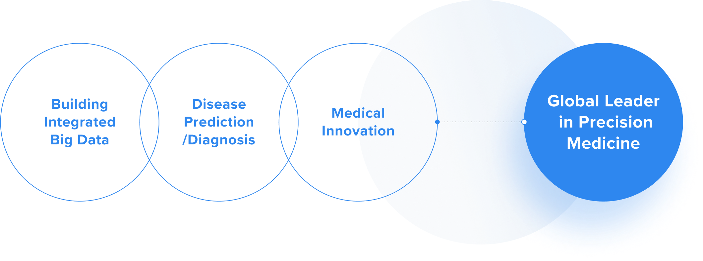
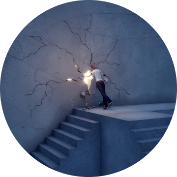

@@include('../../html/include/component/header.html')
Vision
Global leader
in precision medicine
in precision medicine
Predicts and diagnoses diseases and provides personalized solutions.
@@include('../../html/include/common/breadcrumb-white-depth3.html', {
"depth1": "MACROGEN",
"depth2": "Company",
"depth3": "Vision",
})
@@include('_scrollWrap.html')
VISION

Macrogen is a global leader in precision medicine with a mission to predict and diagnose diseases, and present personalized treatment through R&D based on genome big data and collaboration with medical institutes.
Based on advanced core technology, production facilities and talents for reading the base sequence of 3 billion pairs of human genomes, we are committed to building big data that integrates a large amount of genomic and medical information every year through global networks.
Slogan_
HUMANIZING
GENOMICS
GENOMICS
Our goal is to present personalized medical solutions according
to the genetic characteristics of each patient based on human
genomic information and data analysis technology.
We live up to the value of "Hongik Ingan," which means
“for the benefit of all mankind.”
to the genetic characteristics of each patient based on human
genomic information and data analysis technology.
We live up to the value of "Hongik Ingan," which means
“for the benefit of all mankind.”


Business Philosophy
We can help anyone
improve their health
based on their
genetic information
improve their health
based on their
genetic information
We can help anyone improve their health based on their genetic
information, and are devoted to helping people around the world live
happier and healthier lives. By seeking to acquire even deeper
knowledge and related technologies, we are committed to identifying
the genetic cause of diseases.
information, and are devoted to helping people around the world live
happier and healthier lives. By seeking to acquire even deeper
knowledge and related technologies, we are committed to identifying
the genetic cause of diseases.
Core Values

Creative
Thinking
Thinking
Discover values to change
the world through creative thinking.
the world through creative thinking.

Continue to
Challenge
Challenge
Continue to challenge ourselves to
create values and services that surpass
our clients' expectations.
create values and services that surpass
our clients' expectations.

Top-notch
Leader
Leader
Aim to become a top-notch leader that
leads the future with creative thinking
and a bold vision.
leads the future with creative thinking
and a bold vision.